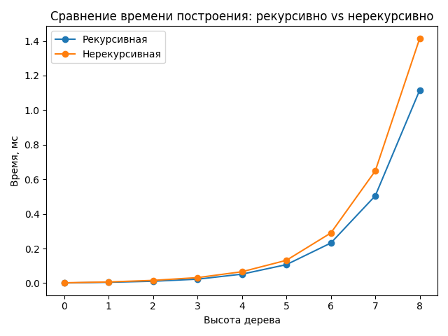

Сравнение реализаций построения бинарного дерева
Цель
Сравнить время выполнения рекурсивного и нерекурсивного (итеративного) алгоритмов построения бинарного дерева на Python. Оценить влияние глубины дерева на производительность и сделать вывод о практической эффективности каждого подхода.
Описание
Реализованы две функции:
build_tree_recursive()— рекурсивное построение дерева;build_tree_iterative()— итеративное построение дерева.
Формулы ветвления (вариант №8):
left_leaf(root) = root + root // 2
right_leaf(root) = root ** 2
Дерево хранится в виде словаря:
{"значение_узла": [левое_поддерево, правое_поддерево]}
Код замера времени
Для измерения использован модуль timeit.
Для каждой высоты дерева выполнялось несколько повторов (repeat=20),
и в таблицу записывалось минимальное время выполнения среди всех прогонов.
Также построен график зависимости времени от высоты дерева с помощью matplotlib.
Результаты измерений
| height | recursive, ms | iterative, ms | Δ, % |
|---|---|---|---|
| 0 | 0.001 | 0.002 | +100% |
| 1 | 0.005 | 0.007 | +40% |
| 2 | 0.011 | 0.016 | +45% |
| 3 | 0.023 | 0.032 | +39% |
| 4 | 0.052 | 0.066 | +27% |
| 5 | 0.107 | 0.132 | +23% |
| 6 | 0.232 | 0.290 | +25% |
| 7 | 0.505 | 0.649 | +28% |
| 8 | 1.116 | 1.415 | +27% |
График

Рисунок 1. Зависимость времени построения дерева от его высоты.
Анализ
- При малых высотах (< 4) разница между реализациями достигает 40–45%, но с ростом дерева стабилизируется на уровне ≈ 25–30%.
- Рекурсивная реализация немного быстрее — у неё меньше служебных операций.
- Итеративная версия чуть медленнее из-за дополнительных структур (
level_nodes,next_level), но не ограничена глубиной рекурсии и безопасна для больших h.
Выводы
- При высоте дерева до 8 рекурсивный вариант в среднем быстрее на ≈ 25–30%.
- Нерекурсивный подход устойчивее и подходит для построения очень глубоких деревьев.
- В практических задачах предпочтителен итеративный метод — он масштабируется без ошибок стека.
- Оба алгоритма демонстрируют экспоненциальный рост времени, пропорциональный количеству узлов.
Выполнил: Ломаченко Ян (P3120, 505115)